DOgether · Case Study
Syncing the Whole Family
Pickups overlap, kids aren't sure what's expected of them, and in families with two homes it gets twice as hard. DOgether turns household tasks into a shared system: parents assign and track, kids earn points for their part, and a divorced parent can switch between households in one tap.
Solo project · Started at HackerU in 2024, refined on my own after the course · Figma, Figma Make, Illustrator, Claude, Gemini, OpenArt
View in FigmaDesigned in Hebrew (RTL). Screens are shown in the original language.
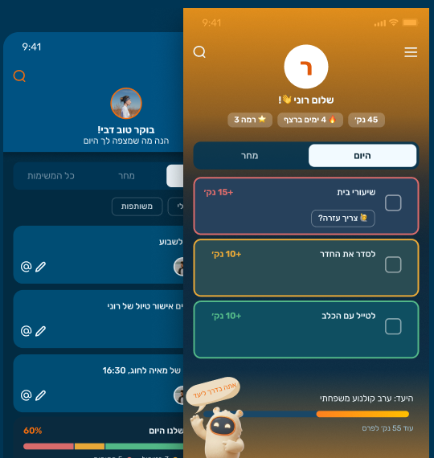
TL;DR
The problem: Families run the household across a calendar, WhatsApp and reminders, and one parent ends up carrying most of it.
The solution: One shared app. Parents assign and track, kids earn points for their part, and a divorced parent can switch between two households in one tap.
What I did: Interviewed 5 families, designed two experiences (parent and kid), and built the flows, edge states, character and design system on my own.
Three decisions that shaped it: Home opens straight on today's list, ownership became light filter chips, and kids add tasks with icons and voice, with no parent approval.
About
An app that helps run the household day to day and keeps every family member in sync, including kids who already have a smartphone.
Research
I interviewed 5 families with at least 2 children, some with separated parents. They used several different tools for scheduling, task lists and staying updated on changes: a calendar, WhatsApp and reminders.
Difficulty staying in sync creates frustration and confusion.
There's always one dominant figure who ends up carrying more responsibility than the rest for various household tasks.
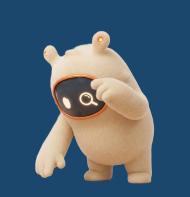
Persona
David, 45 · The two-household dad
David, 45, is divorced and shares two kids, Noa (11) and Itai (8), with his ex-wife. The kids move between two homes. David is a career-driven professional with a packed schedule who struggles to keep both households in sync and remember everything in time, so he usually needs a reminder to take the kids to special events.
Devi and Ben · The overloaded parents
Devi and Ben are a couple in their 40s, both career-driven, with two kids: Roni (9) and Maya (6). They feel they keep forgetting to do things on time, and Devi feels she constantly has to hold all the tasks in her head, especially since the kids are at different schools and activities, each with different needs depending on age.
The kids also don't give enough advance notice about a special school activity, a get-together with friends, and so on.
Ben and Devi want to be more in sync in running the household day-to-day, to share the load more equally, and they also want to instill in the kids the habit of being more active and involved in the routine.
Problems
- Tasks fall on one dominant figure in the family
- Several tools used in parallel with no sync between them
- Kids aren't included in the day-to-day running of the household
- Difficulty coordinating between two households after a divorce
Solutions
- A clear way to divide responsibility among household members
- All tasks synced in one place
- Kids join the app once they have a smartphone, usually around age 7–8
- A divorced parent can manage tasks for both households in one place
Information Architecture
Two Experiences, One Family
Same information, two experiences
Both see the same tasks, but not the same thing. The parent, who runs the household, gets an overall picture of priorities and the event calendar. The child, who needs a reason to get moving, gets a level, a streak and a goal waiting for them.
Parent screen
Management and control: full visibility, clear priorities
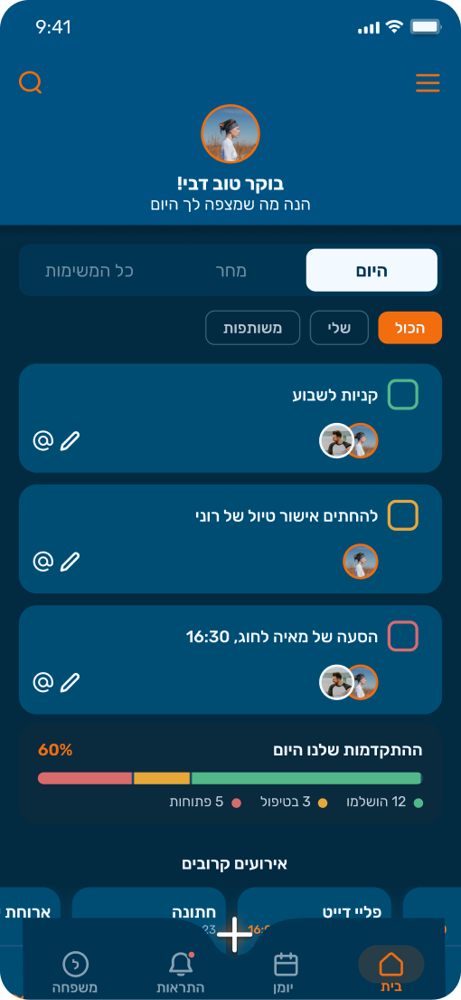
- Today / Tomorrow / All tasks
- Task card: who's assigned, mention, edit
- Family progress: done, in progress, open
- Upcoming events
Child screen
Motivation and achievement: level, streak and a specific goal
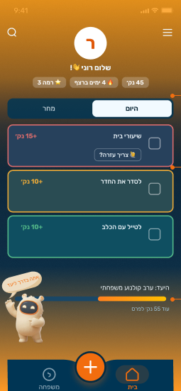
- Streak and level
- Points per task
- Shared family goal: a family movie night
Building the add-task flow
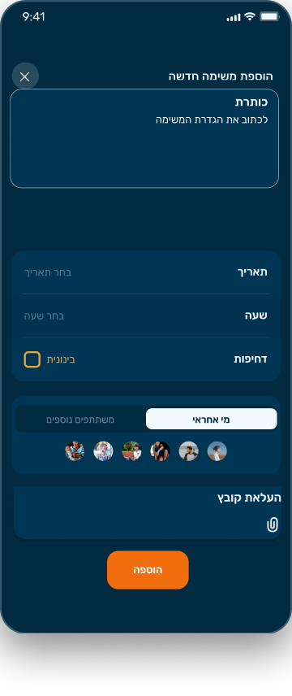
EmptyAn empty form. Urgency starts at medium by default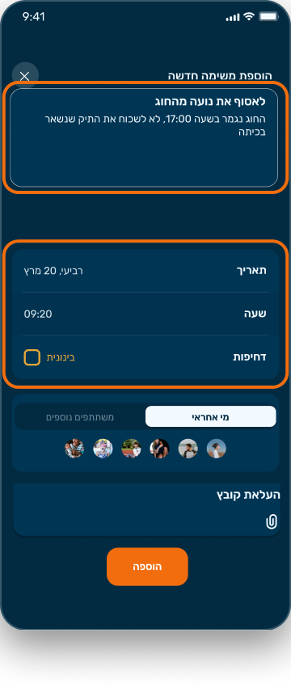
Task detailsTitle, date, time and urgency filled in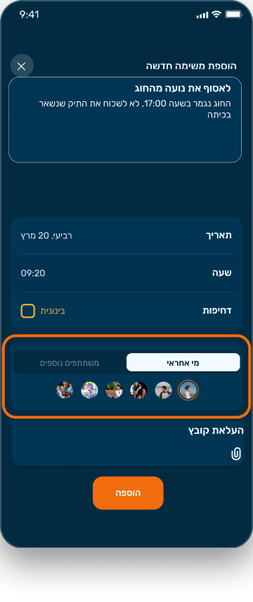
Who's responsibleOne family member is set as the owner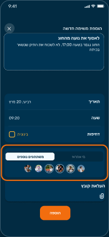
More participantsOthers join to help, with an optional fileThe screen builds up step by step: from empty, through task details and choosing who's responsible, to a full task with more participants. The orange frame marks what changed at each step.
Decisions & Trade-offs
What I chose, and what it cost
Each decision below had a real alternative. I built the main ones side by side before choosing, and I kept the ones I rejected because they shaped the final design.
One home, not a dashboard
Problem: Home and Tasks in the nav showed the same content, and each tab had a different header.
Decision: Home opens straight to today's list. Tasks left the nav, and Notifications took its place.
Trade-off: I built and rejected a separate summary screen. In a simple home app it added a step on the way to the most-used information.
Two layers of filtering
Problem: Time tabs and Mine/Shared looked identical, so nothing read as primary.
Decision: Time stays a segmented control. Ownership became light chips with All as the default, and extra filters open from one chip.
Trade-off: One more tap to reach urgency or family-member filters.
Progress today, workload tomorrow
Problem: The same data appeared as a ring and as a bar, and 'progress' on Tomorrow made no sense.
Decision: A compact segmented bar on Today. A one-line workload summary on Tomorrow and All.
Trade-off: Less celebratory, so the reward moved to the moment a task is done.
Kids own their list
Problem: Kids add tasks too, but a 7-year-old may not write, and approvals add work for parents.
Decision: Icons, a voice recording and today/tomorrow. No approval: points only come from tasks parents assign.
Trade-off: Parents aren't notified about kid-added tasks, but they see them in the shared list.
Screens
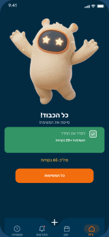
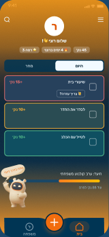
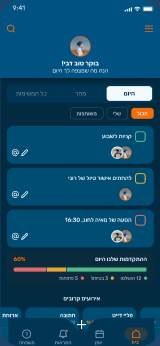
David manages both families in one place
Built for David's persona: he picks the family he's with today and sees only its tasks. Today is his day with the kids, so picking them up from school comes first, at high urgency.
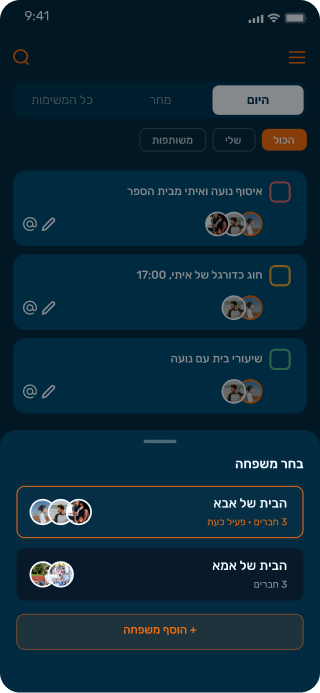
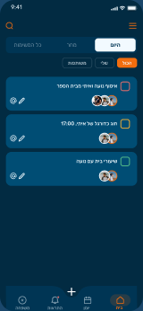
Beyond the Happy Path
Edge states, with the character
A family app gets used in a hurry, on the go and on weak connections. I designed the moments when things don't go as planned, and used the character's expressions to keep them human: pointing to the next step, losing the connection, or simply sad when something fails.
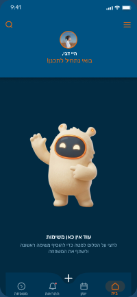
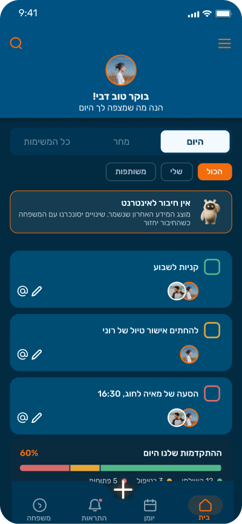
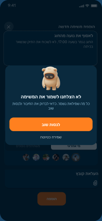
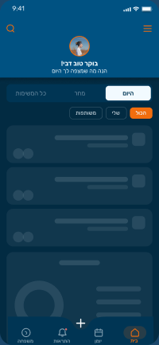
Closing the Loop
A kid asks for help, a parent answers
A kid waiting for homework help shouldn't be left wondering. The request shows its status right on the task card, the parent answers from the notification in one tap, and if the app is closed the answer arrives as a push on the lock screen. 'Seen' matters most: it tells the kid someone noticed, even before an answer.
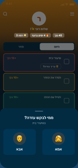
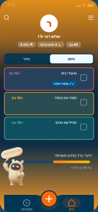
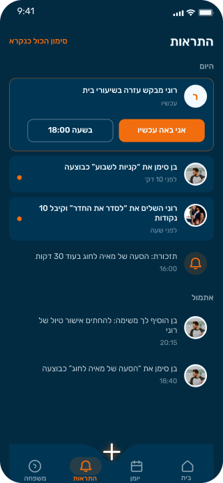
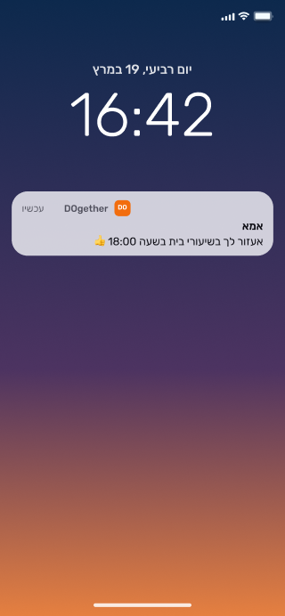
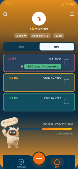
Kids Add Tasks by Voice
Icons first, then hold to record
Kids add tasks too, like a test the teacher announced, but a 7-year-old may not write yet. They tap the + in their nav, the same one parents have, pick a type by icon, hold to record like a voice message, and choose today or tomorrow. The recording itself is the task. No parent approval: points only come from tasks parents assign.
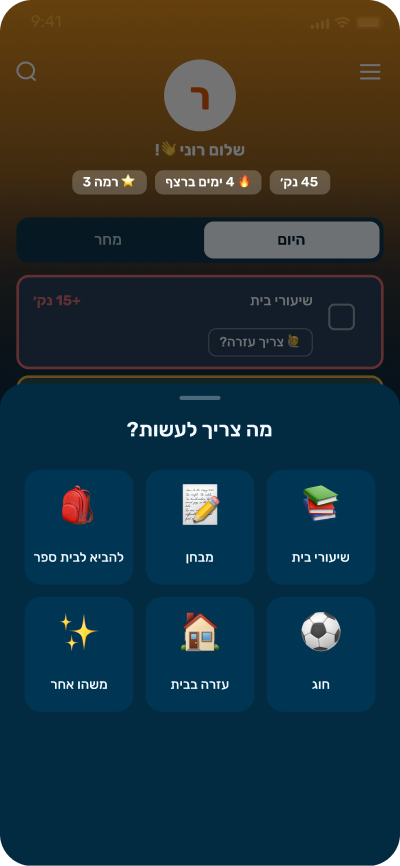
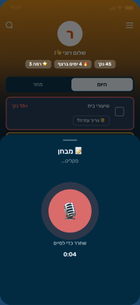
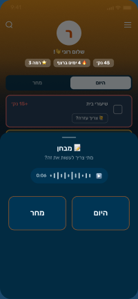
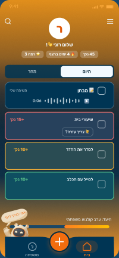
A companion for the whole family
The character accompanies every family member throughout the app, from onboarding to completed tasks: encouraging, reminding and celebrating wins. Each expression was designed for the screen it appears on.
I created the character myself, from the first prompt to the final result.
Tools: Claude · Gemini · OpenArt
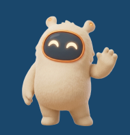
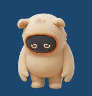
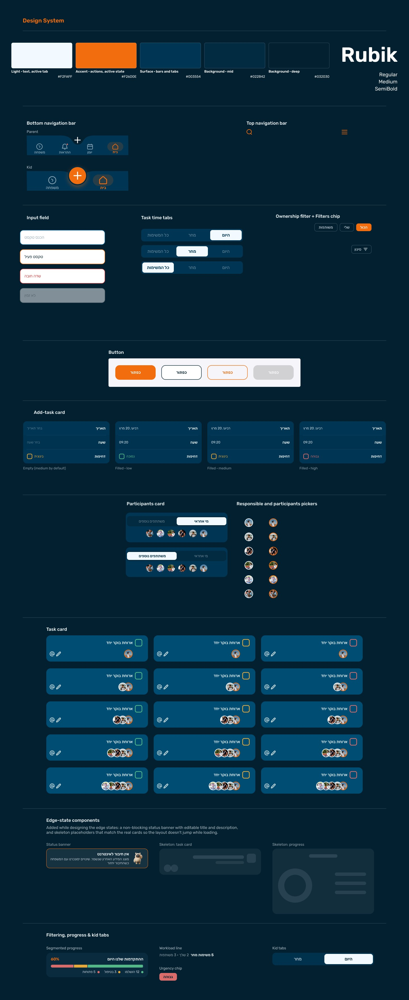
Looking back
What I learned
Managing multiple contexts, two families and two roles, is more complex than it first looks, and it calls for early architecture decisions.
I'd develop the child's perspective earlier: it came in late and stayed less detailed than the parents' personas.
Next step
The next step is a first round with 3–5 users, parents and children, to test the core flow: adding a task for a child and completing it. Usability testing wasn't part of this scope.
I focused on parents and kids. Grandparents who help with the routine are a secondary user I'd design for next.
Also on the list, by choice and not by accident: a task details screen, a Family screen, Mine/Shared views for Tomorrow, a full contrast audit, and optional parent approval for tasks kids add.
Load
Both parents complete a similar share of the tasks over a week.
Motivation
Kids finish their tasks without a reminder.
Known gap
The app shows who is assigned, not how the load is split. A weekly balance view is the first thing I'd design next.